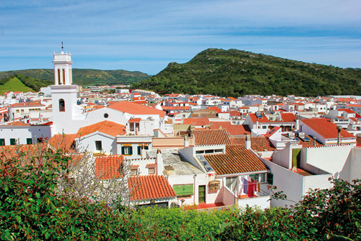
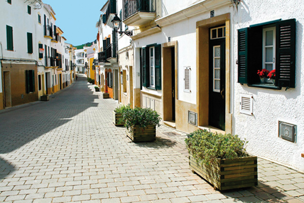
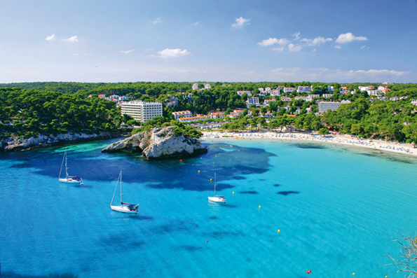

Ferreries, un popolo con essenza
Ci sono posti che hanno qualcosa di speciale senza che uno sappia esattamente cos'è. Strade nelle quali uno si perderebbe però senza conoscere esattamente il perché. Un ambiente che attrae anche se per cause che uno ignora. Ferreries personalizza questa descrizione. Questo popolo centrale, di poco più di 4.500 abitanti, si offre al visitante come un tappeto bianco con tocchi rossi, coronato per il campanile della chiesa di Sant Bartolomeu, parrocchia che diede origine al municipio.
Questo tempio si trova nel centro antico del paese. Un nucleo vanitoso, senza grandi vanti, però che forma un insieme molto piacevole. Le strade con più storia di Ferreries offrono una stampa di grande armonia. In questa zona si trova il Comune o i pozzi che erano sufficenti anticamente agli abitanti del posto. La antica pescheria o l'architettura più tradizionale. In oltre, in queste strade si respira tranquillità e calma, come se lo stress non fosse riuscito a penetrare in questa gente, tinta di bianco.
D'estate, gli abitanti di Ferreries conservano il costume di tirare fuori le loro sedie minorchine in strada e passare la serata chiaccherando. È quello che qui si chiama "seure a la fresca", sedersi al fresco. È un segno di autenticità della gente che si mostra sincera e generosa. Ferreries combina la tradizione, l'essenza del popolo, con la modernità dei tempi odierni.
Questo paese è stato da sempre terra di imprenditori. I 'ferrieresi' hanno saputo sempre aprirsi le strade ed andare avanti. Non in vano, in questo piccolo paese si fabbricano scarpe che si vendono nel mondo intero, e che hanno calpestato le passerelle più importanti del pianeta, scarpe nei piedi delle modelle più pagate.
A Ferreries si producono anche autentiche avarques, dalle tradizionali alle più innovatrici. Il paese conta anche con una importante industria del mobile e della bigiotteria, ed è anche terra di produzione arigianale come il formaggio.
Se passate per Ferreries non perdete l'opportunità di assaggiare il suo pane. I panifici del comune hanno la fama di essere capaci di dare un sapore speciale ai prodotti usciti dai loro forni. I sabati mattina, la gente accoglie un mercato di prodotti agroalimehtari artigianali. Annusate, osservate e assaggiate i veri frutti della terra minorchina. Puro sapore della natura.
Ferreries nacque alla fine del XIII secolo, e ache sembri falsità, è il municipio più elevato di Minorca. Si alza, di media, 141 metri sopra il livello del mare, e nel suo territorio sono ubicati alcuni dei monti piu alti dell'isola. S' Enclusa, antica base militare americana, e Santa Agueda, che raccoglie i resti del castello arabo di Sant Agayz, danno al municipio una particolare personalità. In oltre, nel cammino che conduce alla cima di Santa Agueda si trovano resti di una antica strada romana.
Immaginatevi pestare lo stesso pavimento che i minorchini di molti secoli fa! Un posto tanto emblematico, ultimo rifugio degli arabi nell'isola, che ha dato origine a diverse leggende, tra le quali quella del manzo d'oro. Storia e leggenda a parte, merita salire fino alla cima (ci si mette 45 minuti anpiedi) per godere della vista che offre la seconda montagna più alta di Minorca. Oltre il paese, il municipio di Ferreries offre una multitudine di posti nei quali fermarsi, molto diversi a seconda se si opta per la zona nord o per la sud. Nel nord, la natura più selvaggia della Minorca battuta dal vento di tramontana crea scenari come Ets Alocs, una cala di pietre rotondeggianti, rese cosi dal mare di acqua cristallina ideale per gli amanti delle spiagge deserte.
In strada a questi luoghi, dedicate un momento a visitare il Museo della Scienza Naturale di Minorca, ubicato nella proprietà di Binissues. Vi sorprenderà.
Se invece andate al sud, risaltano oltre gli altri, tre grandi luoghi. Uno sarebbe la spiaggia di Cala Galdana. Un posto spettacolare, una cala urbana ideale per il turismo famigliare che cerca tutte le comodità. La combinazione perfetta dei servizi turistici più completi e un paesaggio profilato da strapiombi.
Il secondo grande attrattivo è Cala Mitjana, una cala totalmente vergine le cui acque turchesi e la sua sabbia bianca e fine sono un lusso per chi è attratto dalla natura allo stato puro. Lasciatevi accarezzare dal sole, sentite la brezza marina mentre osservatevi intorno, e scoprite la piccola Cala Mitjaneta. Le immagini di questa Cala sono state utilizzate per molte cartoline che si mandano dall'isola. Per qualcosa sarà.
La terza attrazione è il canalone di Algendar. È uno degli strapiombi più spettacolari di Minorca. Finisce nella spiaggia di Cala Galdana, ed è stato culla di leggende e miti. Fatevi raccontare mentre camminate tra il paesaggio contemplando la generosità della natura. Abbiate cura di un intorno tanto privilegiato che si mostra ai vostri occhi con totale sincerità.
Se siete amanti dei sentieri, non perdete l'opportunità di visitare il Cammino Reale. Questa via, secoli fa attraversava tutta l'isola, da Ciuttadella fino a Mahon, però il passare del tempo e l'apparire di altre strade alternative finirono lasciandolo in disuso. Senza dubbio, lo sforzo degli abitanti di Ferreries ottenne recuperare un pezzo di questo sentiero, attualmente transitabile. Di fatto, questa via è una scelta eccellente se si vuole raggiungere il Canalone di Algendar.
Torniamo al paese. Se già avete percorso le strade più antiche, vi raccomandiamo di perdere alcuni minuti seduti in qualcuno dei banchi di Piazza di Spagna. Riformato da non molti anni, questo spazio è il centro nevralgico del paese. Qui si celebrano mercati e feste, ed è anche il posto preferito dai bambini per giocare e per i genitori per prendersi un caffè.
Sedetevi e riempitevi dall'essenza dell'isola, non abbiate fretta, semplicemente vivete. Quello che qui si chiama “non passis pena”, una espressione che si potrebbe tradurre come “tranquillo tutto si metterà a posto”. Carpe diem.
Ferreries celebra le sue feste patronali in agosto. I giorni 23, 24 e 25, il comune rende omaggio al suo patrono, Sant Bartomeu, e lo fa con i cavalli come protagonisti. Seguendo il rituale degli altri comuni dell'isola, la celebrazione ha come punto principale il jaleo, che da luogo il giorno 23 al pomeriggio e il 24 a mezzogiorno in una piazza con un terreno inclinato, che apporta più spettacolarità se arrivate all'attuazione dei 'caixers'. In più, il giorno 25 il popolo si scompiglia con la celebrazione di un peculiare jaleo nel quale i cavalli sono sostituiti dagli asini. Un atto diverso e allegro nel quale la missione principale è il divertimento.
Se passate per la strada generale, vedrete come il profilo di Ferreries si definisce a pochi metri dalla strada. Vale la pena dirigersi verso questo posto di pareti bianche e tetti rossicci. Sappiate che, dopo più di sette secoli di storia, non è ancora chiaro da dove viene il nome del paese. C'è chi dice che Ferreries deriva da 'ferrai' (fabbri), aprendo la possibilità di che alcuna persona di questo posto si istallò nella zona per servire la cavalleria dei trasporti che passavano per l'interno di Minorca.
Altri credono che Ferreries derivi da 'Fraria' (associazione), visto che la chiesa di Sant Bartolomeo si alzò sopra i terreni che appartenevano alle associazioni mercenarie. Sia come sia, indipendentemente dall'origine del suo nome, Ferreries ha molto da offrire. Ha un centro che invita alle passeggiate in relax. Ha delle spiagge adatte ai piu comodi, agli amanti delle vergini ed anche per quelli che vogliono scoprire qualcosa di più dei manti di fine sabbia bianca.
Ha uno dei burroni, o canaloni più imponenti dell'isola, e continua ad avere qualcosa, non si sa bene cosa, che attrae e cattura. Rimanete a Ferreries.